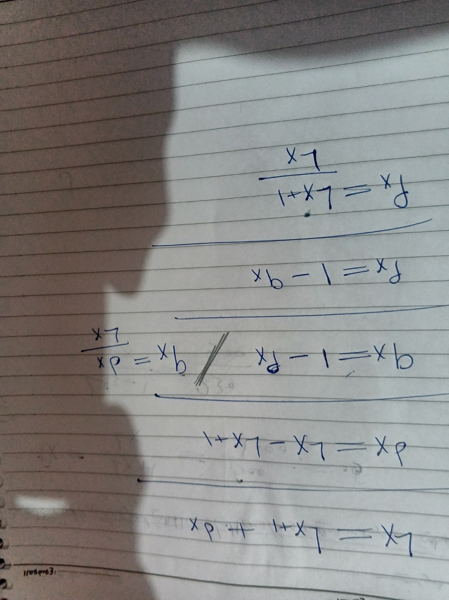

📚 شرح جداول الحياة: حساب الوفيات (d_x)
فيديو إضافي حول جداول الحياة
فيديو ثالث لشرح جداول الحياة

شرح الدرس:
يتمحور هذا الدرس حول كيفية استخدام جدول الحياة (Life Table) لحساب عدد الوفيات (dx) بين عمر x وعمر x+1.
البيانات المعروضة في الفيديو:
- X: العمر.
- Lx: عدد الأحياء الذين وصلوا إلى العمر x.
- dx: عدد الوفيات بين العمر x والعمر x+1.
الصيغة المستخدمة في الفيديو:
dx = Lx - L{x+1}///
d{92} = L{92} - L{93}///
d{92} = 1000 - 500 = 500